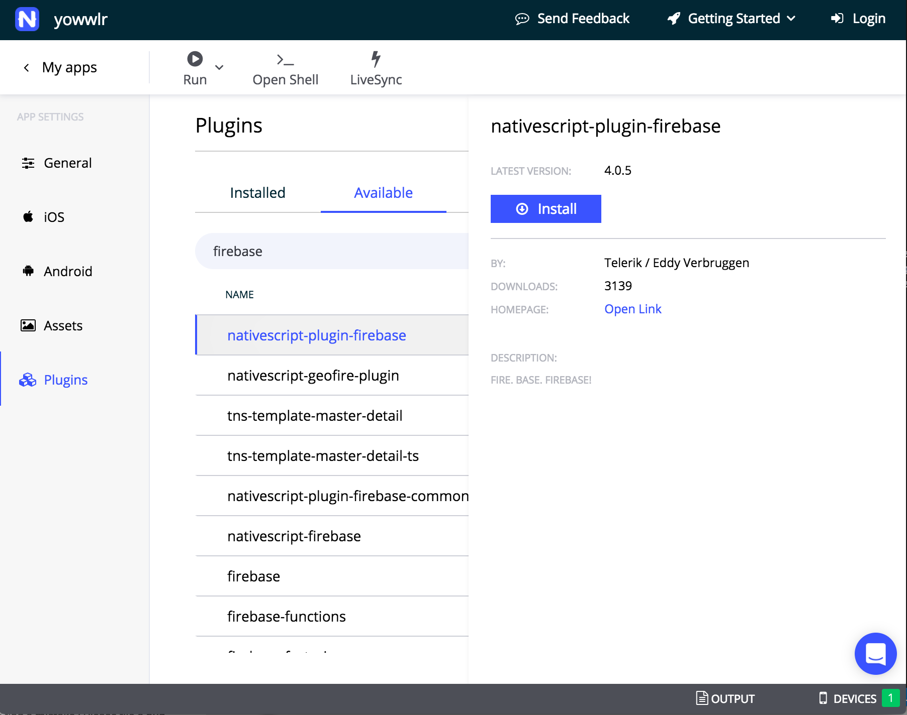

<!--
Copyright (c) 2016 Google Inc.

Licensed under the Apache License, Version 2.0 (the "License"); you may not
use this file except in compliance with the License. You may obtain a copy of
the License at

    http://www.apache.org/licenses/LICENSE-2.0

Unless required by applicable law or agreed to in writing, software
distributed under the License is distributed on an "AS IS" BASIS, WITHOUT
WARRANTIES OR CONDITIONS OF ANY KIND, either express or implied. See the
License for the specific language governing permissions and limitations under
the License.
-->
<link rel="import" href="../step-style.html">
<link rel="import" href="../syntax-style.html">

<dom-module id="step-3">
   <style include="step-style"></style>
   <style include="syntax-style"></style>

  <template>
    <p>For this app, we are going to store our data, comprised of 'Yowls' (like Tweets, but for cats...), in Firebase. 
      Let's integrate the Firebase plugin from within Sidekick.</p>

    <p>Navigate to the app's 'General' page in Sidekick and select 'Plugins' on the side. A panel appears with a list of the plugins
      that are already installed, as seen in your app's outer package.json file. Navigate to the 'Available' plugins tab and search for 'firebase'. 
      Select 'nativescript-plugin-firebase', which is the best Firebase plugin available. Click the gear icon and then 'install'. This will add the plugin to your
      package.json file and it will appear in the 'installed' panel in Sidekick.
    </p>

    

    <p>Now it's time to perform the configuration steps outlined in the plugin documentation. You will need to create an account on Firebase if you don't already have one,
      then create an app within firebase, and download and install some files. Please follow <a href="https://github.com/eddyverbruggen/nativescript-plugin-firebase">this documentation</a> 
      carefully to complete your Firebase installation.</p>

    <aside class="special"><p>Make sure you bundle Id (org.nativescript.yowwlr, for example) is correct in Firebase. It needs to match the id you created in Sidekick. 
      </p></aside>

      <p>When the files are in place, you will need to rebuild the app. It's easiest to do this from the command line. In Sidekick's General tab, 
        click on 'Open Shell', which will open a command prompt (on Mac, it's the Terminal, and on Windows, it's the Command Prompt). Type tns run ios or tns run android, depending
        on which system you are targeting. This will perform a clean install of the Firebase plugin and you'll be able to continue to livesync.</p>

      <aside class="special"><p>If you want to run this app using Android's AVD emulator, you will need to use Google Play Services in the emulator image
        that you set up. Follow <a href="https://developer.android.com/studio/run/managing-avds.html">these instructions</a> to do so. You may need to target this emulator by typing tns run android --device my-emulator-image-name.</p></aside>

      <p>Now, you need to edit your app code to complete the installation. In your code editor, find the app.module.ts file. Edit it to import the Firebase plugin at the top of the file:</p>

        <pre>import firebase = require("nativescript-plugin-firebase");</pre>

        <p>Then, before the @NgModule declaration, initialize Firebase:
          
<pre>
  firebase.init({
   persist: false,
   onAuthStateChanged: (data: any) => { 
     //we will tackle auth state in the next tutorial    
     /*if (data.loggedIn) {
       BackendService.token = data.user.uid;
     }
     else {
       BackendService.token = "";
     }*/
   }
 }).then(
     function (instance) {
       console.log("firebase.init done");
     },
     function (error) {
       console.log("firebase.init error: " + error);
     }
 );
</pre>

<p>This is all you need to do to initialize Firebase in your NativeScript app!</p>
 
<aside class="warning"><p>At this point when attempting to run an iOS app on the iOS emulator, you may experience errors with 'entitlements'. 
  To fix this, follow the instructions above to add another plugin to your app: 
  'nativescript-entitlements'. Then, add a file to the App_Resources/iOS folder called app.entitlements. 
  In that file, add the following:</p>
  <pre><code>
    &#x3C;?xml version=&#x22;1.0&#x22; encoding=&#x22;UTF-8&#x22;?&#x3E;
    &#x3C;!DOCTYPE plist PUBLIC &#x22;-//Apple//DTD PLIST 1.0//EN&#x22; &#x22;http://www.apple.com/DTDs/PropertyList-1.0.dtd&#x22;&#x3E;
    &#x3C;plist version=&#x22;1.0&#x22;&#x3E;
    &#x3C;dict&#x3E;
        &#x3C;key&#x3E;keychain-access-groups&#x3C;/key&#x3E;
        &#x3C;array&#x3E;
            &#x3C;string&#x3E;$(AppIdentifierPrefix)org.nativescript.yowwlr&#x3C;/string&#x3E;
        &#x3C;/array&#x3E;
    &#x3C;/dict&#x3E;
    &#x3C;/plist&#x3E;
  </code>
  </pre>
  <p>Build the app again by typing ctrl-c to quit livesync, then type tns run ios again to restart it. Your app should 
    restart without errors this time.</p>
</aside>

<p>Now that we have Firebase installed and initialized, let's prepare our interface to display data stored in it.</p>


    

  </template>
  <script>
    Polymer({
      is: "step-3"});
  </script>
</dom-module>
